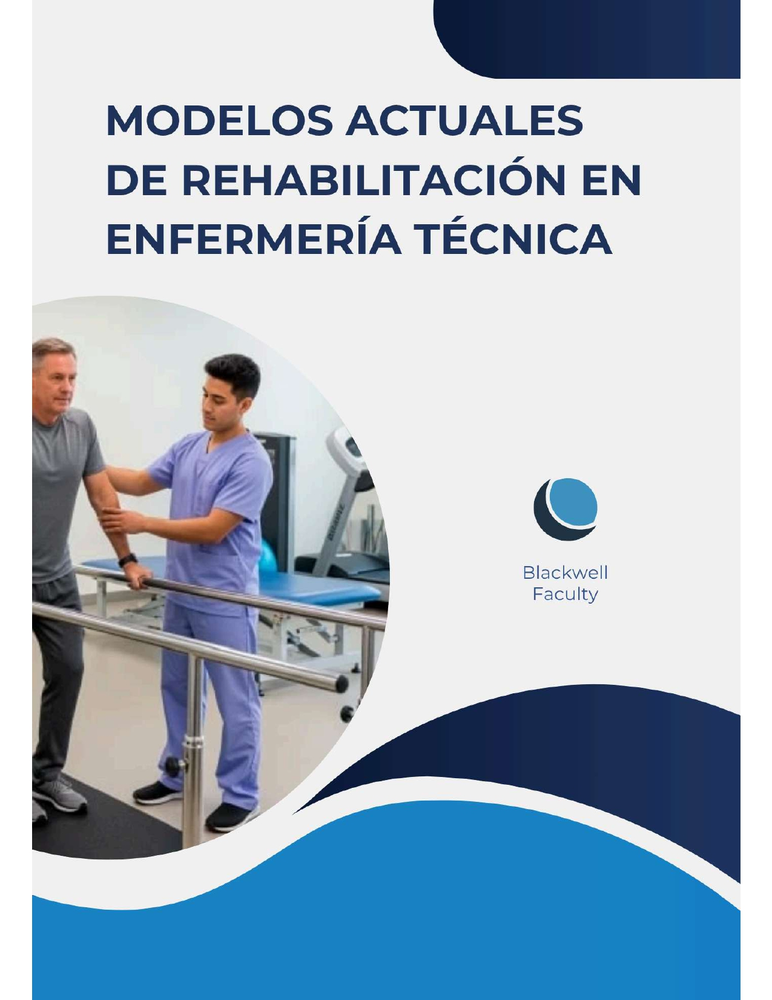

MODELOS ACTUALES DE REHABILITACIÓN EN ENFERMERÍA TÉCNICA
Blackwell Faculty
Resumen del Libro
"Modelos Actuales de Rehabilitación en Enfermería Técnica"
es una obra integral y vanguardista diseñada como la guía
definitiva para el personal de salud que busca la
excelencia en la recuperación funcional. Este libro
fusiona con maestría los fundamentos teóricos y clínicos
con las técnicas más demandadas en la actualidad,
abarcando desde la movilización articular y el masaje
terapéutico hasta programas especializados en
rehabilitación postoperatoria, neurológica, pediátrica y
geriátrica. Es una herramienta esencial que define el rol
crucial del enfermero técnico como pilar en el equipo
multidisciplinario, proporcionando protocolos basados en
evidencia para transformar la calidad de vida de pacientes
con patologías complejas.
Lo que diferencia a este volumen es su enfoque
en la modernización de la práctica asistencial, integrando
capítulos dedicados al uso de inteligencia artificial,
realidad virtual, telemedicina y dispositivos portátiles
en la rehabilitación. Además de la formación técnica, la
obra aborda dimensiones críticas como la psicología, la
nutrición y la ética profesional, preparando al lector
para los desafíos de los entornos clínicos actuales y las
tendencias futuras de la biomecánica. Ya sea en centros de
alta complejidad o en rehabilitación comunitaria, este
libro es el recurso indispensable para quienes desean
liderar la innovación en el cuidado rehabilitador y
garantizar una autonomía duradera para sus pacientes.
Una vez que el usuario haya visto al menos un documento, este fragmento será visible.
Comentarios (3)
Excelente material. Me ha sido de mucha utilidad para entender los protocolos de emergencia aplicados a entornos hospitalarios modernos. Muy recomendado.
Tengo una duda en el capítulo 4 sobre los indicadores KPI, ¿alguien sabe si se aplican igual para clínicas privadas?
Literal es mi nueva biblia para las prácticas. Viene súper completo, desde rehabilitación pediátrica hasta geriátrica, y los casos de estudio ayudan muchísimo a entender cómo aplicar todo en el hospital. Si buscas algo que sea práctico y no solo pura teoría, ¡tienes que leerlo!